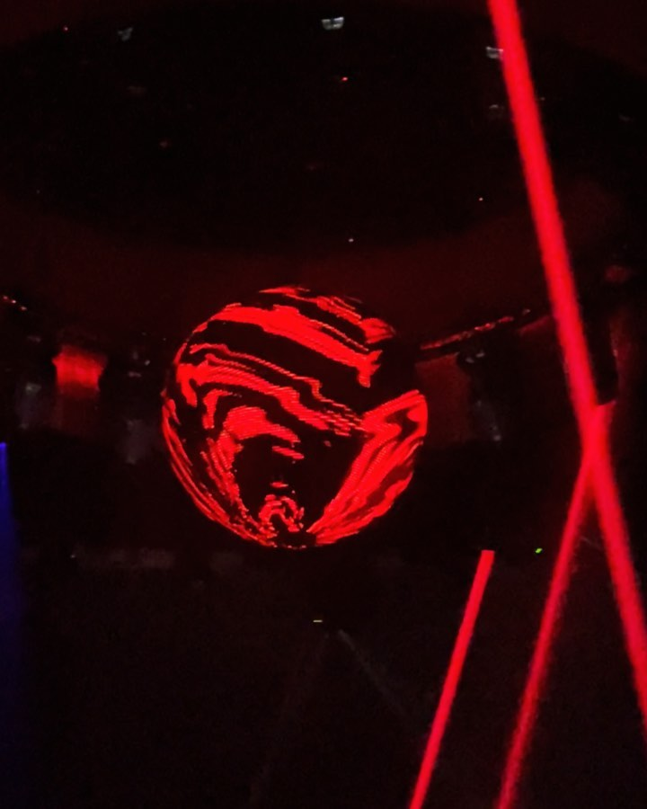

FRUTIS · MIEMBRO Nº 001 · DE MÉXICO, VIVE EN BARCELONA
d.mfrutis · 3TRES6 RECORDS · HOUSE & BALNEARIC
Acá suena Frutis: de 3TRES6, de México y radicado en Barcelona. House y balnearic en cabina, sesiones underground y noches que conectan los dos lados del Atlántico. Todo su archivo vive acá — dossier, wall, fechas y sesiones.
21
Fotos de archivo
5
Fechas en cartel
2
Sesiones en video

001 / Dossier
Frutis
BarcelonaCargando el crew…
002 / The Wall
Archivo visual
21 fotos · cabina, flyers, viajesDeslizá → para recorrer el archivo
003 / Dónde tocó
Mapa de gigs
Flyers del archivo · Barcelona- Cargando fechas…
004 / Sesiones